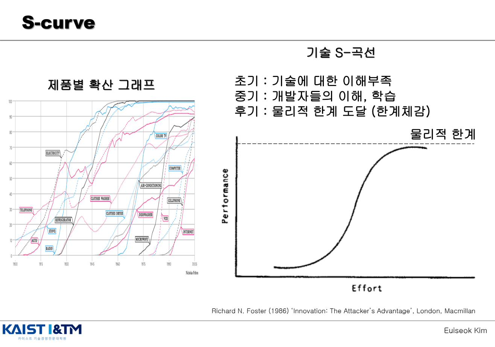
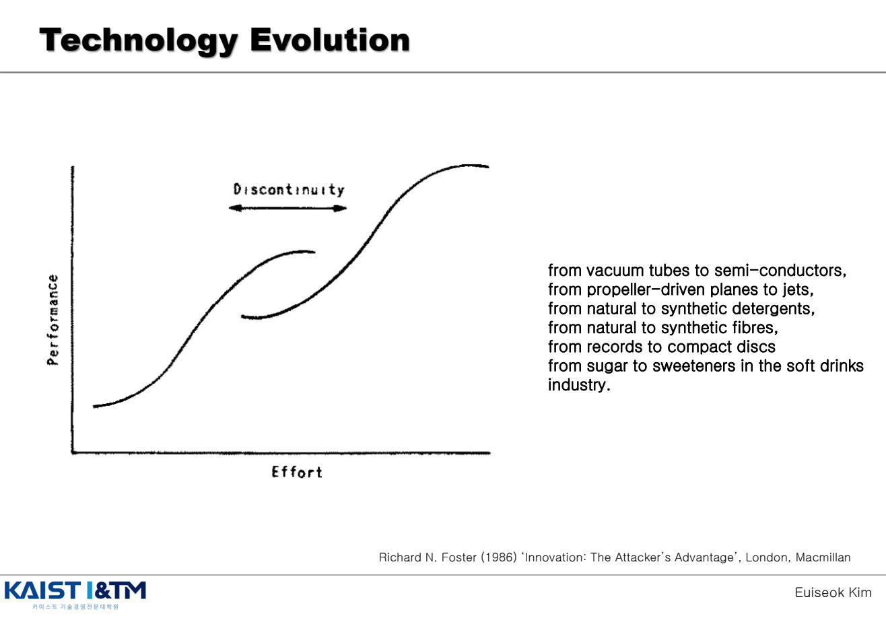
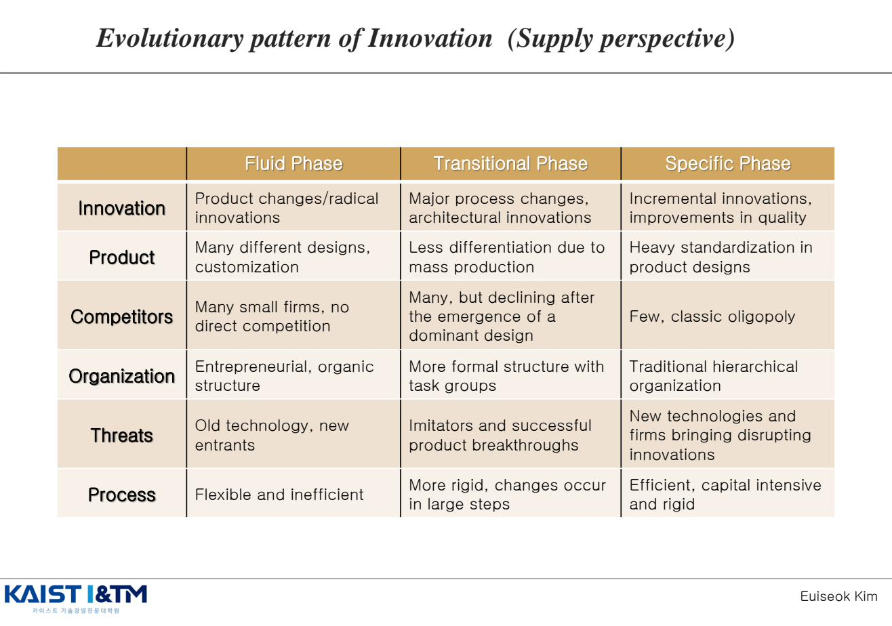
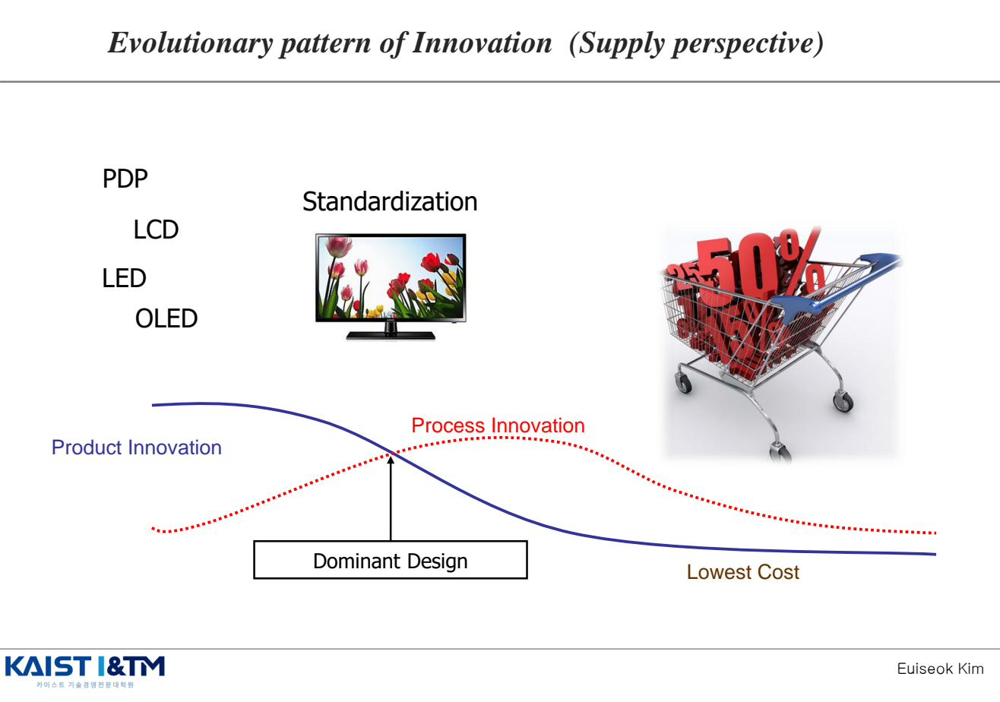
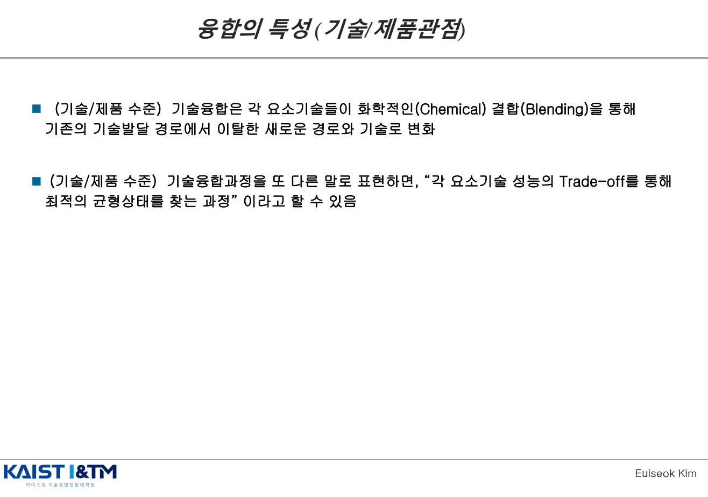
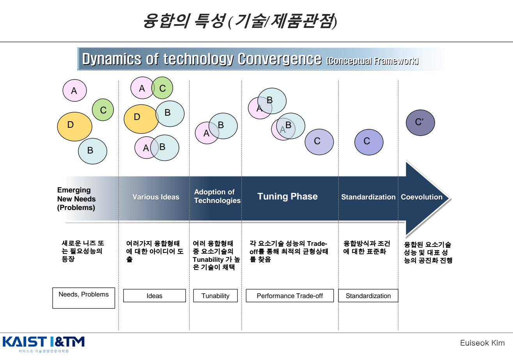

Dynamic Model · 동태적 혁신 모델
슘페터부터 강조해온 핵심 — "Dynamic을 봐야 한다" — 를 실제 모델로 구현한 챕터다. S-curve(Foster)로 기술 진화의 동태를 잡고, Utterback & Abernathy로 한 산업이 어떻게 변해가는지를 본다. 그 핵심에 Dominant Design이 있고, 한 번 자리잡은 표준이 비효율적이어도 유지되는 이유 — 경로의존성(QWERTY) — 도 함께 다룬다. 마지막으로 동시대의 큰 흐름인 융합(Convergence)을 정리한다.
학습 개요
- S-curve의 3단계와 기술 불연속(Discontinuity)을 통한 신기술의 대체
- Utterback & Abernathy의 3단계: Fluid Phase → Transitional Phase → Specific Phase
- 제품 혁신과 공정 혁신의 시기별 강조 변화 + Dominant Design의 등장
- QWERTY 경제학: 경로의존성(Path Dependency)의 세 가지 원인
- 융합(Convergence)의 정의와 5단계 동태 + Performance Trade-off
1. S-curve와 기술 진화 (Foster, 1986)
Richard Foster가 Innovation: The Attacker's Advantage(1986)에서 정립한 모델. 한 기술의 성능(Performance)은 투입 노력(Effort)에 따라 S자 형태로 발전한다는 관찰이다.

S-curve의 3단계
| 단계 | 특징 |
|---|---|
| 초기 (Slow) | 기술에 대한 이해 부족 → 성능 향상이 더딤 |
| 중기 (Rapid) | 개발자들의 이해와 학습이 누적 → 성능이 급격히 향상 |
| 후기 (Plateau) | 물리적 한계 도달 → 한계 체감, 성능 향상 정체 |
S-curve 간의 전환과 Discontinuity

한 기술이 한계에 도달하면, 전혀 다른 원리에 기반한 새로운 기술이 등장하여 더 높은 S-curve를 그린다. 이 사이의 공백이 Discontinuity(불연속)이며, 여기에서 "공격자의 우위(Attacker's Advantage)"가 발생한다 — 기존 기업은 옛 기술에 묶여 있어 새 기술로 점프하지 못하기 때문이다.
진공관 → 반도체 / 프로펠러 → 제트엔진 / 천연 세제 → 합성 세제 / 천연 섬유 → 합성 섬유 / LP → CD / 설탕 → 인공 감미료
2. Utterback & Abernathy의 동태적 모델 EXAM
James Utterback이 Mastering the Dynamics of Innovation(1994)에서 정립한 모델. 기업과 산업 부문에서의 혁신 유형(Types)과 혁신 과정(Process)을 통합한 관점을 제시한다. Myers & Marquis의 연구 데이터를 이용해 모델의 타당성을 시험했다.

| Fluid Phase (유동기) | Transitional Phase (전환기) | Specific Phase (정착기) | |
|---|---|---|---|
| Innovation | 제품 변화 / 급진적 혁신 | 주요 공정 변화 / 아키텍처 혁신 | 점진적 혁신, 품질 개선 |
| Product | 다양한 디자인, 맞춤화 | 대량생산으로 차별화 감소 | 제품 디자인의 강한 표준화 |
| Competitors | 많은 작은 기업, 직접 경쟁 없음 | 많지만 지배적 설계 등장 후 감소 | 소수, 고전적 과점(oligopoly) |
| Organization | 기업가적, 유기적(organic) 구조 | 작업 그룹이 있는 더 공식적 구조 | 전통적 위계 조직 |
| Threats | 옛 기술, 신규 진입자 | 모방자와 성공적 제품 돌파구 | 새로운 기술과 파괴적 혁신을 가져오는 기업들 |
| Process | 유연하지만 비효율 | 더 경직, 큰 단계로 변화 | 효율적, 자본집약적, 경직됨 |
3. Dominant Design (지배적 설계) EXAM
3단계 모델의 핵심 전환점은 Dominant Design의 등장이다. Fluid Phase에서 다양했던 디자인들 중 시장이 받아들이는 표준 설계가 자리잡으면, 이후 모든 경쟁은 그 설계를 전제로 한다.

제품 혁신과 공정 혁신의 시기별 변화
- Fluid Phase: 제품 혁신(Product Innovation) 우세 — 다양한 설계가 경쟁, 차별화가 핵심
- Dominant Design 등장 시점: 표준이 정해지는 결정적 분기점
- Transitional Phase: 제품 혁신 감소, 공정 혁신(Process Innovation) 증가 — 대량생산을 위한 효율화
- Specific Phase: 두 혁신 모두 점진적 수준으로 안정, Lowest Cost가 경쟁의 핵심
예시: TV 디스플레이의 진화
PDP → LCD → LED → OLED. 시장이 점차 LCD/LED 계열로 표준화되면서 가격 경쟁이 격화되었다. 이것이 곧 Standardization의 과정이다.
핵심 통찰
Dominant Design은 "가장 기술적으로 우월한" 설계가 아니다. 시장·소비자·표준 기구·네트워크 효과 등 다양한 요인이 작용한 결과다. 때로는 더 우수한 기술이 표준 경쟁에서 패배한다 (예: VHS vs Betamax).
4. QWERTY와 경로의존성 (Path Dependency)
Paul David(1985)의 고전 논문 Clio and the Economics of QWERTY가 다룬 주제. Dominant Design이 한 번 자리 잡으면, 그것이 비효율적이어도 바뀌지 않는다는 현상을 설명한다.
경제적 효율성이 아니라 역사적 우연과 초기 조건에 의해 기술·제도·표준이 채택되고, 한 번 채택되면 그 경로를 벗어나기 어려운 현상.
QWERTY 자판이 유지되는 이유 — 쿼티노믹스의 3가지 요소
- 기술적 상호연관성 (Technical Interrelatedness): 자판은 사용자·교육·소프트웨어 등 다른 요소들과 강하게 연결되어 있어 단독 교체가 어려움
- 규모의 경제 (Economies of Scale): 다수가 사용하면 사용할수록 비용이 떨어지고 표준 지위가 강화됨
- 투자의 준비가역성 (Quasi-irreversibility of Investment): 학습과 습관화로 인한 비가역성 — 한 번 익힌 자판을 바꾸려면 큰 학습 비용 발생
이는 Dvorak 자판이 더 효율적임에도 QWERTY가 표준으로 유지되는 이유다. 같은 원리가 비디오테이프(VHS), 운영체제(Windows), 프로그래밍 언어 등 다양한 영역에 적용된다.
5. 융합 (Convergence) EXAM
2000년대 이후 혁신의 가장 큰 흐름. 정보통신·바이오·나노 기술이 서로 결합하며 산업의 경계 자체가 흐려지고 있다.
5.1 융합의 정의 (예상문제집 빈출)

- (기술/제품 수준) 기술융합은 각 요소기술들이 화학적인(Chemical) 결합(Blending)을 통해 기존의 기술발달 경로에서 이탈한 새로운 경로와 기술로 변화하는 것
- (기술/제품 수준) 기술융합 과정은 "각 요소기술 성능의 Trade-off를 통해 최적의 균형 상태를 찾는 과정"
- (산업/시장 수준) 산업/시장의 경계를 넘나듦
- (산업/시장 수준) 융합은 시장에서 Disruptive Innovation을 창출 (IM07로 연결)
- (산업/시장 수준) 융합은 가치사슬의 전면적인 재편 과정
핵심 키워드는 두 가지: 화학적 결합(Chemical Blending)과 성능 Trade-off. 단순히 "더하는 것(addition)"이 아니라 요소들이 서로 영향을 주며 새로운 균형을 찾는 과정이다.
5.2 융합의 동태 5단계 (Conceptual Framework)

| 단계 | 핵심 | 설명 |
|---|---|---|
| 1. Emerging New Needs (Problems) | Needs, Problems | 새로운 니즈 또는 필요 성능의 등장 |
| 2. Various Ideas | Ideas | 여러 가지 융합 형태에 대한 아이디어 도출 |
| 3. Adoption of Technologies | Tunability | 여러 융합 형태 중 요소기술의 Tunability(조정 가능성)가 높은 기술이 채택 |
| 4. Tuning Phase | Performance Trade-off | 각 요소기술 성능의 Trade-off를 통해 최적의 균형 상태를 찾음 |
| 5. Standardization → Coevolution | Standardization | 융합 방식과 조건에 대한 표준화 → 융합된 요소기술 성능 및 대표 성능의 공진화 진행 |
왜 어떤 기술은 융합되고 어떤 기술은 융합되지 않는가
핵심은 Tunability — 한 요소기술이 다른 요소기술과 조합되었을 때 성능을 조정할 여지가 있는지 여부. Tunability가 높을수록 융합 후보로 채택될 가능성이 높다. 또 다른 핵심은 "Technological disequilibrium" — 융합이 시작되는 시점에는 요소기술 간 균형이 깨져 있고, 이를 새로운 균형으로 끌고 가는 과정이 곧 융합이다.
예상 문제 매칭
📌 Utterback & Abernathy 동태 모델 (빈출)
"Utterback & Abernathy의 동태적 혁신 모델 3단계를 설명하고, 각 단계에서 제품 혁신과 공정 혁신의 비중 변화를 서술하시오."
답안 핵심:
- 3단계: Fluid → Transitional → Specific
- 각 단계의 핵심 변수: Innovation 유형 / Product / Competitors / Organization / Threats / Process
- 제품혁신: Fluid에서 정점 → 점차 감소 / 공정혁신: 점진적으로 증가 → Transitional에서 정점
- 핵심 분기점: Dominant Design의 등장
📌 S-curve와 기술 불연속
"기술 S-curve를 설명하고, 기술 불연속(Discontinuity) 시 신기술이 어떻게 기존 기술을 대체하는지 사례와 함께 서술하시오."
답안 핵심: 3단계(초기·중기·후기) → 물리적 한계 → 새로운 S-curve로 점프 → 공격자의 우위. 사례: 진공관 → 반도체, LP → CD 등.
📌 QWERTY와 경로의존성 (예상문제집 19번)
"QWERTY 사례를 통해 경로의존성(Path Dependency) 개념을 설명하고, 쿼티노믹스의 3가지 구성요소를 서술하시오."
답안 핵심: 경로의존성 정의(역사적·초기조건) → 기술적 상호연관성 / 규모의 경제 / 투자의 준비가역성. 학습·습관화의 비가역성 강조.
📌 융합(Convergence) (예상문제집 20번)
"기술 융합(Convergence)의 정의와 특성을 기술/제품 수준과 산업/시장 수준에서 각각 설명하시오. 융합의 동태적 5단계도 함께 서술하시오."
답안 핵심:
- 기술/제품 수준: 화학적 결합 + Performance Trade-off를 통한 새 경로 창출
- 산업/시장 수준: 경계 넘나듦 + 파괴적 혁신 창출 + 가치사슬 재편
- 5단계: Needs → Ideas → Tunability 기반 채택 → Trade-off 튜닝 → 표준화·공진화
※ 이 페이지의 모든 그림은 강의자료 IM05_Dynamic_Model.pdf에서 발췌한 것이며, 학습 목적으로만 사용된다.